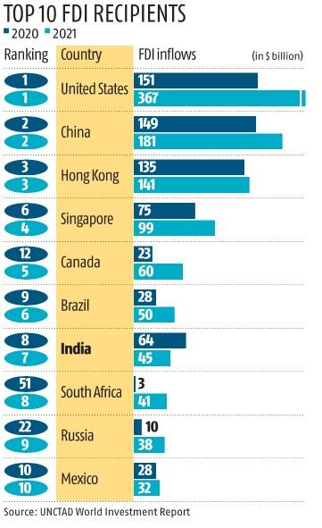
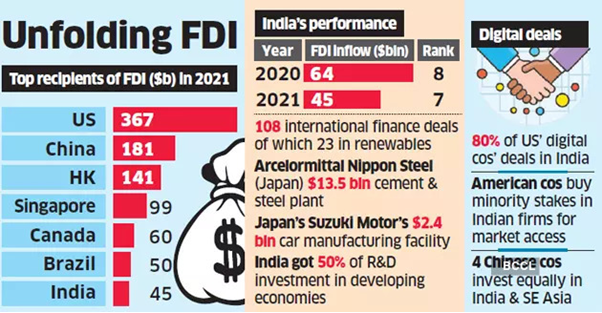

UNCTAD
World Investment Repot 2022: Highlights
The United Nations Conference on Trade and Development (UNCTAD) released World Investment Report 2022 on 9th June, 2022.
The World Investment Report supports policymakers by monitoring global and regional investment trends and national and international policy developments. It focuses on trends in foreign direct investment (FDI) worldwide, at the regional and country levels and emerging measures to improve its contribution to development. It also provides analysis on global value chains and the operations of multinational enterprises, with special attention to their development implications.
This year’s report reviews investment in the Sustainable Development Goals (SDGs) and shows the influence of investment policies on public health and economic recovery from the pandemic.
Highlights
-
Global flows of foreign direct investment have been severely hit by the COVID-19 pandemic. In 2020, they fell by one third to $1 trillion, well below the low point reached after the global financial crisis a decade ago.
-
Sustainability themed investment products in global financial markets rose by 63% from 2020 and governments around the world seek to develop regulatory frameworks for sustainable finance.
-
Greenfield investments in industry and new infrastructure investment projects in developing countries were hit especially hard.
-
Global foreign direct investment (FDI) flows in 2021 were $1.58 trillion, up 64 per cent from the exceptionally low level in 2020. The recovery showed significant rebound momentum with booming merger and acquisition (M&A) markets and rapid growth in international project finance because of loose financing conditions and major infrastructure stimulus packages.
-
However, the global environment for international business and cross-border investment changed dramatically in 2022. The war in Ukraine – on top of the lingering effects of the pandemic – is causing a triple food, fuel and finance crisis in many countries around the world. The resulting investor uncertainty could put significant downward pressure on global FDI in 2022.
-
FDI flows to Developing Economies grew more slowly than those to developed regions but still increased by 30 per cent, to $837 billion - the highest level ever recorded — largely due to strength in Asia, a partial recovery in Latin America and the Caribbean and an upswing in Africa.
-
In 2021, Multinational Enterprises (MNEs) from developed economies more than doubled their investment abroad to $1.3 trillion, from $483 billion. Much of the increase was driven by record reinvested earnings and high levels of M&A activity.
-
Despite high profits, investment by multinational companies in new overseas projects were still one-fifth below pre-pandemic levels and for developing countries, the value of greenfield announcements stayed flat.
-
International investment in sectors relevant for the Sustainable Development Goals (SDGs) in developing countries increased substantially in 2021, by 70 per cent.
-
FDI flows to Africa reached $83 billion – a record level – from $39 billion in 2020, accounting for 5.2 per cent of global FDI.
-
Despite successive waves of COVID-19, FDI in developing Asia rose for the third consecutive year to an all-time high of $619 billion, underscoring the resilience of the region. It is the largest recipient region of FDI, accounting for 40 per cent of global inflows.
-
In 2021, FDI in Latin America and the Caribbean rose by 56 per cent to $134 billion, sustained by strong inflows in traditional target industries such as automotive manufacturing, financial and insurance services, and electricity provision, and pushed up by record high investments in information and communication services across the region.
-
FDI flows to 82 structurally weak, vulnerable, and small economies rose by 15 per cent to $39 billion.
-
While the recovery benefitted all regions, almost three-quarters of the growth was concentrated in developed economies as FDI flows rose 134 per cent and multinational companies posted record profits.
-
Flows to developing economies rose 30 per cent to $837 billion — the highest level ever recorded — largely due to strength in Asia, a partial recovery in Latin America and the Caribbean and an upswing in Africa. The share of developing countries in global flows remained just above 50 per cent
Relevance to India
-
India ranked 7th among the top recipients of Foreign Direct Investment (FDI) in 2021 and improved itself from the 8th position in 2020.
-
Although, FDI inflow in the country declined to $ 45 billion in 2021 as compared to $ 64 billion in 2020.
-
Among the top 10 host economies, only India saw a decline in its inflows. However, outward FDI from India rose 43 per cent to $15.5 billion in 2021.
-
Despite the decline in FDI inflow, a flurry of new international project finance deals was announced in the country - 108 projects compared with 20 projects on average for the last 10 years,
-
The largest number of projects announced with foreign funding in India was in renewables at 23. Other large projects include construction of a steel and cement plant for $13.5 billion by ArcelorMittal Nippon Steel (Japan) and a new car manufacturing facility by Suzuki Motor (Japan) for $2.4 billion.
-
Fall in FDI level in India resulted into the fall of FDI in South Asia.


Comments
|
António Guterres, Secretary-General of the United Nations
|
A concerted global effort is needed to increase SDG investment leading up to 2030. The package of recommendations put forward by UNCTAD for promoting investment in sustainable recovery provides an important tool for policymakers and the international development community.
|
Conclusion
UNCTAD foresees that the growth momentum cannot be sustained and that global FDI flows in 2022 will likely move on a downward trajectory, at best, remaining flat. While the recovery benefitted all regions, almost three-quarters of the growth was concentrated in developed economies as FDI flows rose 134 per cent and multinational companies posted record profits.
The package of recommendations put forward by UNCTAD for promoting investment in sustainable recovery provides an important tool for policymakers and the international development community. This year’s report shows the sign of recovery in 2021, but the global crisis in terms of disruption of supply chain and rising inflation is going to affect the world economic growth downwardly. India’s falling FDI inflow is also a matter of concern, and the Government of India has to support the Indian industry and economy to attract more FDIs to use them in various development programmes for the economic development.